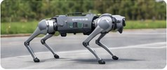
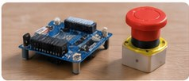
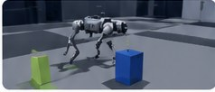

PORTFOLIO · IA & ROBOTIQUE
Théo Bounaceur
Ingénieur IA & Robotique
De la simulation au robot réel, je mets l'intelligence artificielle au service de systèmes concrets.
À PROPOS
Profil
Ingénieur en intelligence artificielle et robotique, je m'intéresse à l'apprentissage automatique, à la robotique et au déploiement de méthodes d'IA sur des systèmes physiques.
Remplace ce texte par une présentation personnelle de 3 à 4 lignes : spécialités, expérience au LORIA et type de poste recherché.
Compétences clés
SÉLECTION
Mes projets
Quelques réalisations en IA, robotique et systèmes embarqués.

Locomotion robotique par apprentissage par renforcement
Entraînement de politiques de locomotion en simulation et déploiement sur Unitree Go2.
⌄
Objectif. Développer et entraîner une politique de locomotion, puis préparer son exécution sur robot réel.
Travail réalisé. À compléter : environnement d'entraînement, observations, récompenses, algorithme, résultats et conditions de déploiement.
Voir le dépôt GitHub ↗Déploiement de politiques sur robot humanoïde Expérimentation et déploiement de comportements robotiques sur Unitree G1. ⌄
Objectif. Faire le lien entre les politiques apprises en simulation et leur exécution sur un robot humanoïde.
Travail réalisé. À compléter avec le contexte, les outils, les méthodes et les résultats obtenus.
Voir le dépôt GitHub ↗

Système d'arrêt d'urgence sans fil
Conception d'un dispositif de sécurité sans fil pour systèmes robotiques.
⌄
Objectif. Concevoir un arrêt d'urgence sans fil avec émetteur, récepteur et relais de sécurité.
Travail réalisé. À compléter : architecture, communication radio, gestion de l'état de sécurité, tests et validation.
Voir le dépôt GitHub ↗

Simulation et apprentissage pour la robotique
Entraînement et évaluation de politiques robotiques en environnement simulé.
⌄
Objectif. Utiliser la simulation pour entraîner, tester et améliorer des comportements robotiques.
Travail réalisé. À compléter avec les environnements, les modèles, les métriques et les résultats.
Voir le dépôt GitHub ↗Les intitulés, descriptions, images et liens GitHub de cette première version sont modifiables. Supprime les projets qui ne correspondent pas à des réalisations que tu souhaites présenter.